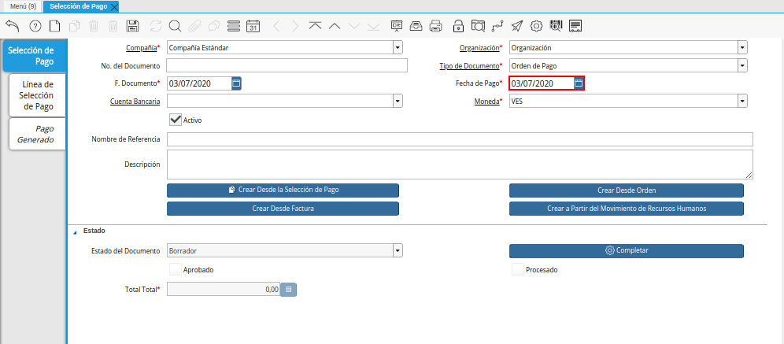
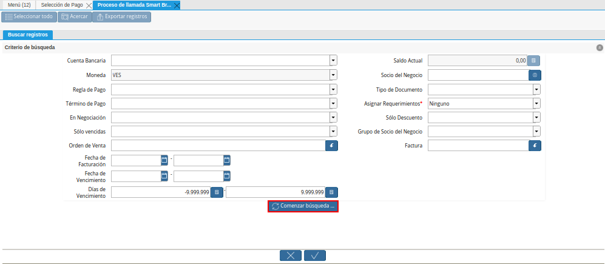
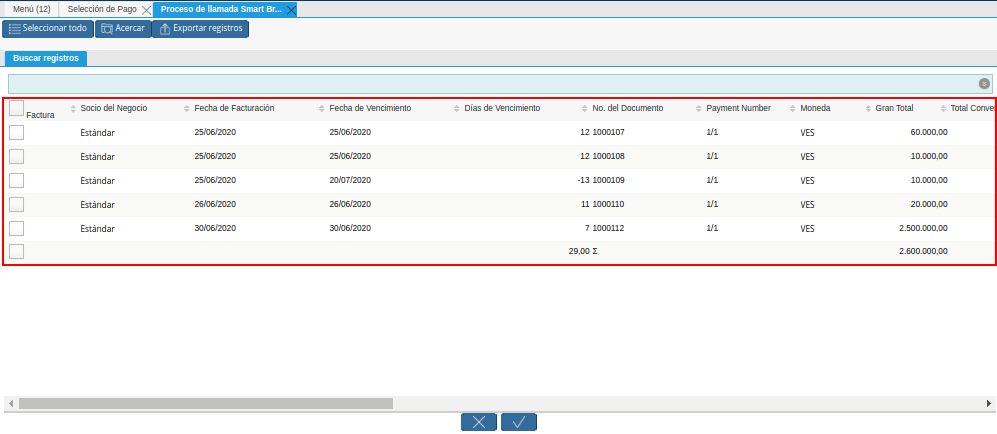
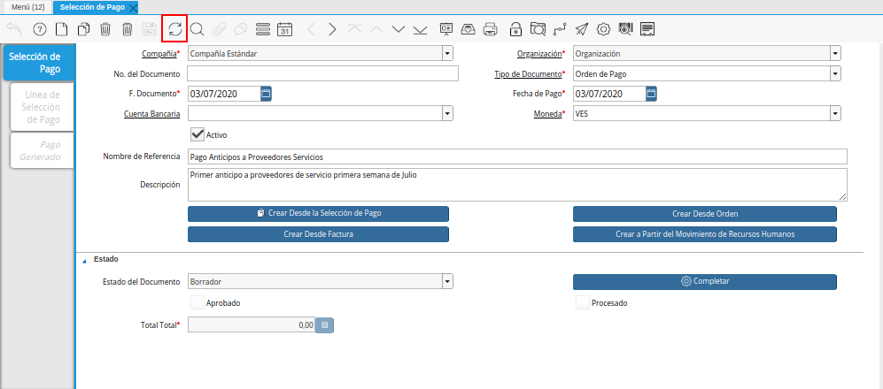
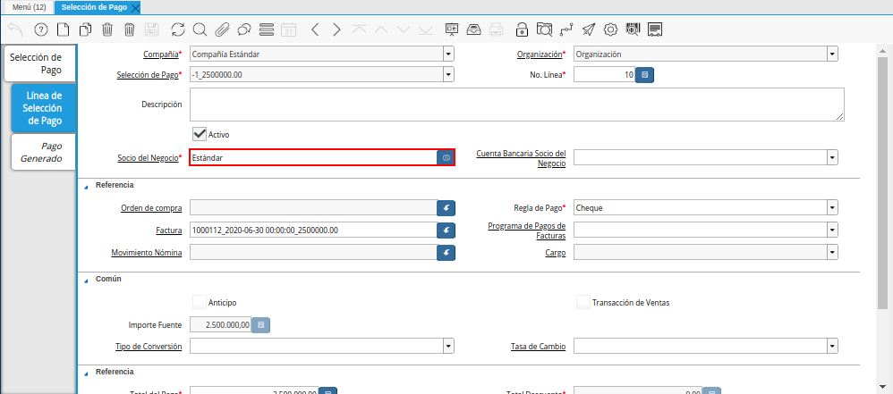
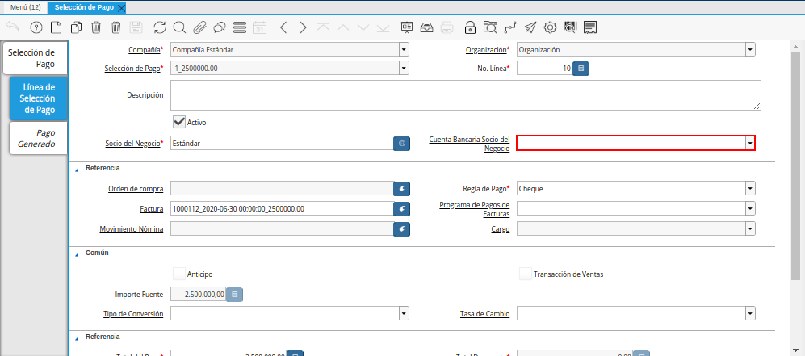
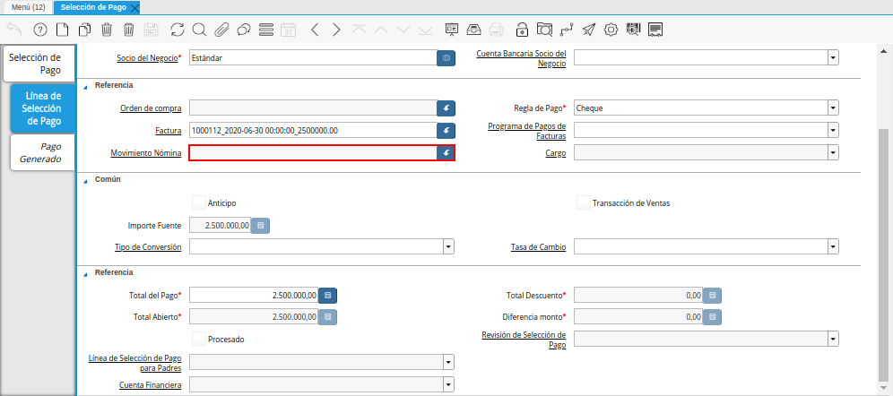
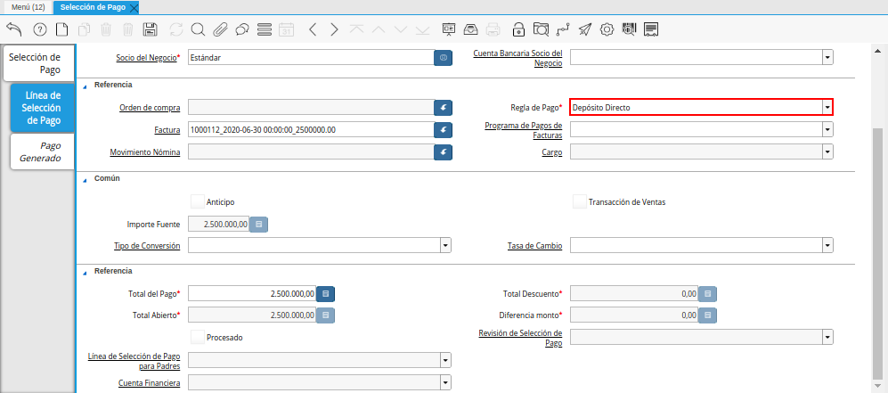

Registro desde Factura¶
Para realizar una “Orden de Pagos” en ADempiere el cual permite montar una solicitud de todas aquellas facturas que estén pendientes por pagar, se deben aplicar los siguientes pasos:
Ubique y seleccione en el menú de ADempiere, la carpeta “Gestión de Saldos Pendientes”, luego seleccione la ventana “Selección de Pagos”.
Imagen 1. Menú de ADempiere para el Documento Orden de Pago desde Factura

Podrá visualizar la ventana “Selección de Pago”, con los diferentes registros en dicha ventana.
Imagen 2. Ventana Selección de Pago para el Documento Orden de Pago desde Factura

Seleccione el icono “Registro Nuevo”, ubicado en la barra de herramientas de ADempiere, para crear un nuevo registro en la ventana “Selección de Pago”.
Imagen 3. Icono Registro Nuevo de la Ventana Selección de Pago para el Documento Orden de Pago desde Factura
Seleccione en el campo “Organización”, la organización para la cual está realizando el documento “Orden de Pago”.
Al seleccionar la organización con la que trabajará el registro a crear bajo estará disponible únicamente bajo esa organización seleccionada, aunque la decisión de la organización a trabajar quedará al momento que inicie sesión en ADempiere.
Imagen 4. Campo Organización del Documento Orden de Pago desde Factura

Introduzca en el campo “No. del Documento”, el número de documento correspondiente a la secuencia de numeración del documento que esta realizando.
Imagen 5. Campo Número de Documento del Documento Orden de Pago desde Factura

Seleccione el tipo de documento a generar en el campo “Tipo de Documento”, la selección de este define el comportamiento del documento que se está elaborando, dicho comportamiento se encuentra explicado en el documento Tipo de Documento elaborado por ERPyA. Para ejemplificar el registro es utilizado el tipo de documento “Orden de Pago”.
Imagen 6. Campo Tipo de Documento del Documento Orden de Pago desde Factura

Seleccione en el campo “F. Documento”, la fecha en la cual se está generando el documento de orden de pago.
Imagen 7. Campo F. Documento del Documento Orden de Pago desde Factura

Seleccione en el campo “Fecha de Pago”, la fecha en la cual se debe realizar el pago.

Imagen 8. Campo Fecha de Pago del Documento Orden de Pago desde Factura
Seleccione en el campo “Cuenta Bancaria”, la cuenta bancaria a la cual requiere generar el pago.
Imagen 9. Campo Cuenta Bancaria del Documento Orden de Pago desde Factura

Seleccione en el campo “Moneda”, la moneda para realizar la orden de pago.
Imagen 10. Campo Moneda del Documento Orden de Pago desde Factura

Introduzca en el campo “Nombre de Referencia”, un nombre de referencia para la orden de pago que está realizando.
La información a colocar en este campo es una pequeña referencia de la orden pago que se esté creando por ejemplo: “Pago proveedores Servicios”.
Imagen 11. Campo Nombre de Referencia del Documento Orden de Pago desde Factura

Introduzca en el campo “Descripción”, una breve descripción referente a la orden de pago que está realizando.
La información a colocar en este campo es una pequeña descripción de la orden de pago que se esté realizando por ejemplo: “Pagos a proveedores primera semana de Junio”
Imagen 12. Campo Descripción del Documento Orden de Pago desde Factura

Seleccione la opción “Crear Desde Factura”, para crear la orden de pago desde la factura.
Al seleccionar el botón “Crear Desde Factura”, se desplegará otra ventana llamada Smart Browser (Ventana de Búsqueda Inteligente) donde podrá ubicar a las facturas que estén pendientes por pagar.
Imagen 13. Opción Crear desde Factura del Documento Orden de Pago desde Factura

Podrá observar la siguiente ventana de búsqueda inteligente una serie de campos para ser utilizados como criterio de búsqueda.
Imagen 14. Ventana de Búsqueda Inteligente del Proceso Crear Desde Factura

Los campos a visualizar en el smart browser son los siguientes:
Campo “Cuenta Bancaria”, este es un campo tipo lista donde aparecerá el listado de las cuentas bancarias cargadas en ADempiere.
Imagen 15. Campo Cuenta Bancaria de la Ventana de Búsqueda Inteligente del Proceso Crear Desde Factura
Campo “Moneda”, este campo se encuentra sólo lectura y la moneda a mostrar dependerá de la moneda seleccionada en la ventana padre “Selección de Pago”; la moneda que aparezca en ese campo dentro del smart browser le indica a ADempiere que los documentos a buscar deben estar bajo esa moneda, ejemplo:
Si el valor en el campo “Moneda”* es “**VES” (Bolívar) cuando se realice la búsqueda los documentos ADempiere mostrara únicamente los que estén creados bajo esa moneda.
Si el valor en el campo “Moneda” es USD” (Dólar) cuando se realice la búsqueda los documentos ADempiere mostrara únicamente los que estén creados bajo esa moneda.
Imagen 16. Campo Moneda de la Ventana de Búsqueda Inteligente del Proceso Crear Desde Factura
Campo “Regla de Pago”, este es un campo de búsqueda tipo lista el cual al tildarlo mostrará una serie de opciones de reglas de pagos, la opción a seleccionar en esté campo le indicará a ADempiere qué al momento de realizar la búsqueda ubique y muestre solo las facturas de compras que estén bajo la regla de pago seleccionada en ese campo,como por ejemplo:
Si se selecciona la regla de pago “** A Crédito**” y tengo creadas una o varias facturas que tienen establecida esa regla de pago, al realizar la búsqueda desde el smart browser ADempiere mostrará las facturas que éste únicamente con esa regla de pago, si no existen facturas con esa regla de pago ADempiere no mostrará nada.
Imagen 17. Campo Regla de Pago de la Ventana de Búsqueda Inteligente del Proceso Crear Desde Factura
Campo “Término de Pago” este es un campo de búsqueda tipo lista el cual al tildarlo mostrará una serie de opciones de término de pago, la opción a seleccionar en esté campo le indicará a ADempiere qué al momento de realizar la búsqueda ubique y muestre solo las facturas de compras que estén bajo ese término de pago, seleccionado en ese campo,como por ejemplo:
Si se selecciona el término de pago “Contado” y tengo creadas una o varias facturas que tienen establecido ese término de pago, al realizar la búsqueda desde el smart browser ADempiere mostrará las facturas que éste únicamente con ese término de pago, si no existen facturas con ese término de pago ADempiere no mostrará nada.
Imagen 18. Campo Término de Pago de la Ventana de Búsqueda Inteligente del Proceso Crear Desde Factura
Campo “En negociación” este campo es un campo tipo lista donde al seleccionar cualquiera de las opciones (Sí / No) ubicará las facturas que estén en negociación.
Imagen 19. Campo en Negociación de la Ventana de Búsqueda Inteligente del Proceso Crear Desde Factura
Campo “Sólo Vencidas” este campo es un campo tipo lista donde al seleccionar cualquiera de las opciones (Sí / No) ubicará las facturas que estén o no estén vencidas.
Imagen 20. Campo Sólo Vencidas de la Ventana de Búsqueda Inteligente del Proceso Crear Desde Factura
Campo “Orden de Venta”, en este campo tipo búsqueda al seleccionar una orden ya sea de venta o de compra, ubicara las facturas asociadas a esa orden.
Imagen 21. Campo Orden de Venta de la Ventana de Búsqueda Inteligente del Proceso Crear Desde Factura
Campo “Fecha de la Facturación”, este campo es un campo tipo fecha el cual cuenta con dos recuadros con calendarios, el primero es para ser utilizado como fecha de la factura “Desde” y el segundo como fecha de la factura “Hasta”, al colocar una fecha en cualquiera de estas dos opciones (Fecha desde / Fecha hasta) ADempiere mostrará únicamente las facturas que están asociadas bajo ese rango de fechas, como por ejemplo:
Si se coloca en el campo fecha desde la fecha “18/06/2020” y el campo fecha hasta “20/06/2020”, ADempiere mostrar las facturas que estén bajo ese rango de fechas.
Imagen 22. Campo Fecha de Facturación de la Ventana de Búsqueda Inteligente del Proceso Crear Desde Factura
Note
Para saber más sobre el campo “Fecha Facturación” y qué acción implica sobre un documento por pagar, visitar el documento Registro de Documento por Pagar.
Campo de búsqueda ”Fecha de Vencimiento” este campo es un campo tipo fecha el cual cuenta con dos recuadros con calendarios, el primero es para ser utilizada como fecha de vencimiento ”Desde” y el segundo como fecha de vencimiento ”Hasta”, al colocar una fecha en cualquiera de estas dos opciones (Fecha desde / Fecha hasta) ADempiere mostrará únicamente las facturas que están asociadas bajo ese rango de fechas, como por ejemplo:
Si se coloca en el campo fecha desde, la fecha ”18/06/2020” y el campo fecha hasta ”20/06/2020”, ADempiere mostrar las facturas que estén bajo ese rango de fechas; la fecha de vencimiento de una factura aplica más que todo para aquellas facturas las cuales cuentan con una regla de pago.
Imagen 23. Campo Fecha de Vencimiento de la Ventana de Búsqueda Inteligente del Proceso Crear Desde Factura
Campo de búsqueda ”Días de Vencimiento” este campo es utilizado para colocar los días de vencimiento de una factura; estos días de vencimiento son configurados en la factura y aplica más que todo para aquellas facturas las cuales cuentan con una regla de pago a crédito.
Imagen 24. Campo Días de Vencimiento de la Ventana de Búsqueda Inteligente del Proceso Crear Desde Factura
Campo de búsqueda ”Socio de Negocio”, este campo puede ser utilizado si desea ubicar las facturas que estén asociadas a un socio de negocio en específico.
Imagen 25. Campo Socio de Negocio de la Ventana de Búsqueda Inteligente del Proceso Crear Desde Factura
Campo “Tipo de Documento”, este es un campo de búsqueda tipo lista el cual al tildarlo mostrará una serie de opciones de los tipos de documentos que se encuentran asociados a las facturas, la opción a seleccionar en este campo le indicará a ADempiere qué al momento de realizar la búsqueda ubique y muestre sólo las facturas que estén bajo el tipo de documento seleccionado en ese campo, como por ejemplo:
Si se selecciona el tipo de documento “Factura de Cuentas por Pagar Nacional” ADempiere mostrará cuando se realice la búsqueda unicamente las facturas que estén asociadas a ese tipo de documento, de lo contrario si no es seleccionado ningún tipo de documento ADempiere mostrará todas las facturas con todos los tipos de documentos que estén asociados a una factura.
Imagen 26. Campo Tipo de Documento de la Ventana de Búsqueda Inteligente del Proceso Crear Desde Factura
Campo de búsqueda ”Asignar Requerimientos” este es un campo tipo lista, el cual contiene una serie de opciones el cual indica a ADempiere que dependiendo del requerimiento seleccionado ADempiere ubicara las facturas, dentro de los requerimientos de este campo están:
Ninguno: Si se selecciona este criterio de búsqueda, ADempiere ubicara todas las facturas en ADempiere , es decir ubicar las facturas que estén con órdenes o sin órdenes con recepciones o sin recepciones.
Orden de Compra: si se selecciona este criterio de búsqueda, ADempiere ubicara solo y únicamente las facturas que estén asociadas a una orden de compra, de lo contrario no mostrará ninguna factura.
Orden de Compra y Recibo: Si se selecciona este criterio de búsqueda, ADempiere ubicara solo y únicamente las facturas que tengan asociada una orden de compra y una recepción , de lo contrario no mostrará ninguna factura.
Recibo: Si se selecciona este criterio de búsqueda, ADempiere ubicara solo y únicamente las facturas que tengan asociada una recepción, de lo contrario no mostrará ninguna factura.
Imagen 27. Campo Asignar Requerimientos de la Ventana de Búsqueda Inteligente del Proceso Crear Desde Factura
Campo de búsqueda ”Sólo Descuento” Este campo es un campo tipo lista el cual indica sí requiere aplicar para la condición de búsqueda que muestre solo las facturas con descuento o que no muestre ninguna factura que contenga aplicado un descuento.
Imagen 28. Campo Sólo Descuento de la Ventana de Búsqueda Inteligente del Proceso Crear Desde Factura
Campo de búsqueda ”Grupo de Socio del Negocio” Este es un campo tipo lista el cual al seleccionar cualquiera de las opciones a mostrar de un grupo de socio del negocio, se mostrará solo y únicamente las facturas que estén asociada a ese grupo de socio del negocio.
Imagen 29. Campo Grupo de Socio del Negocio de la Ventana de Búsqueda Inteligente del Proceso Crear Desde Factura
Campo de búsqueda ”Factura” Este campo tipo búsqueda permite ubicar una factura en específico , para que al momento de tildar la opción comenzar la búsqueda esté muestre únicamente la información de la factura ubicada dentro de esté campo de búsqueda.
Imagen 30. Campo Factura de la Ventana de Búsqueda Inteligente del Proceso Crear Desde Factura
Dependiendo del criterio de búsqueda seleccionado tilde la opción “Comenzar Búsqueda”, para buscar las facturas de los socios del negocio proveedores.

Imagen 31. Opción Comenzar Búsqueda
Al tildar la opción “Comenzar Búsqueda”, se desplegará en la parte inferior de la ventana las facturas que están pendientes por pagar.

Imagen 32. Listado de Facturas
Seleccione las facturas que deseen asociar a la “Orden de Pago”.
Imagen 33. Seleccionar Factura y Opción OK
Al seleccionar la factura indique cual es el total que se desea cancelar al proveedor de esa factura.
Imagen 23. Total a Cancelar
Seleccione la opción “OK”, para cargar a la pestaña “Línea de Selección de Pago” la información de las facturas seleccionadas.
Imagen 36. Opción Ok de la Ventana de Búsqueda Inteligente del Proceso Crear Desde Factura


Seleccione el icono “Refrescar”, ubicado en la barra de herramientas de ADempiere para refrescar la ventana y pueda visualizar la información cargada desde la opción “Crear Desde Factura”.

Imagen 37. Icono Refrescar del Documento Orden de Pago desde Factura
Seleccione la pestaña “Línea de Selección de Pago”, para verificar que la información cargada desde la opción “Crear Desde Factura” sea correcta.
Imagen 38. Pestaña Línea de Selección de Pago del Documento Orden de Pago desde Factura
Note
En la pestaña “Línea de Selección de Pago” deberán aparecer las misma cantidad de facturas seleccionadas desde la opción “Crear Desde Factura”.
Podrá observar que en cada registro de la pestaña “Línea de Selección de Pago” aparecerán las siguientes características:
Campo “Selección de Pago” debe aparecer el número de la selección de pago con la que se está trabajando, este número es el número de documento de la orden de pago.
Imagen 39. Campo Selección de Pago del Documento Orden de Pago desde Factura
Campo “No. Línea” este campo define el número de línea de cada registro asociado a la pestaña “Lńea Selección de Pago”, cada número de línea va incrementando de 10 en 10, es decir que sí existen 3 registros asociados en la pesta cada registro estar en 10, 20 y 30.
Imagen 40. Campo N° Línea del Documento Orden de Pago desde Factura
Campo “Descripción” este campo puede ser utilizado si se requiere dar una descripción en el registro de la línea.
Imagen 41. Campo Descripción del Documento Orden de Pago desde Factura
Checklist “Activo” esté checklist indica si el registro de la línea está activo o no.
Imagen 42. Checklist Activo del Documento Orden de Pago desde Factura
En el campo “Socio del Negocio” debe aparecer el socio de negocio de la factura que se encuentra asociada al registro de la línea.

Imagen 43. Socio de Negocio Factura del Documento Orden de Pago desde Factura
Campo “Cuenta Bancaria Socio del Negocio”, en este campo tipo lista deben aparecer las cuentas bancarias asociadas al socio del negocio, las cuentas bancarias a aparecer en este campo dependerá de las cuentas asociadas al momento de crear Registro de Proveedor.
La selección de la cuenta bancaria en este campo dependerá de las reglas del negocio que tenga la compañía con los proveedores.

Imagen 44. Campo Cuenta Bancaria Socio del Negocio del Documento Orden de Pago desde Factura
Campo “Orden de Compra” para este caso no debe aparecer ninguna información ya que se está trabajando son con facturas, sí requiere realizar una “Orden de Pago” y asociar órdenes verificar el instructivo Registro desde Orden.
Imagen 45. Campo Orden de Compra del Documento Orden de Pago desde Factura
En el campo “Factura” debe aparecer el número del documento de la factura seleccionada desde opción “Crear Desde Factura”.
Imagen 46. Campo Factura del Documento Orden de Pago desde Factura
Campo “Movimiento Nómina” para este caso no debe aparecer ninguna información ya que se está trabajando son con órdenes de compras, sí requiere realizar una “Orden de Pago” y asociar a un movimiento de nómina verificar el instructivo Registro desde Nómina.

Imagen 47. Campo Movimento de Nómina del Documento Orden de Pago desde Factura
Campo “Regla de Pago” se debe seleccionar la regla de pago con la que se emitirá el pago al proveedor.
ADempiere cuenta cuenta con cinco (5) reglas de pagos, las cuales son:
A crédito: esta regla de pago indica que dicho documento cuenta con un crédito de pago, sin embargo es crédito no es reflejado en la orden de pago si no en la regla de pago que tenga establecida el “Socio del Negocio” o la “Orden de Compra”.
Débito directo. está regla de pago indica que el pago a generar es un débito directo, lo cual en pocas palabras es una transferencia bancaria.
Depósito directo: está regla de pago indica que el pago a generar es un depósito directo, está regla también entraría dentro de transferencia bancaria.
Cheque: está regla de pago indica qué el pago a generar es a través de cheques bancarios.
Tarjeta de crédito: está regla de pago indica qué el pago a generar es a través de tarjeta de crédito.

Imagen 48. Campo Regla de Pago del Documento Orden de Pago desde Factura
Campo “Programa de Pago de Factura” se debe seleccionar el programa de pago que posea la factura.
Imagen 49. Campo Programa de Pago del Documento Orden de Pago desde Factura
Campo “Cargo” se debe seleccionar el cargo qué desee asociar al registro de la línea de la selección de pago.
Imagen 50. Campo Cargo del Documento Orden de Pago desde Factura
Checklist “Anticipo” aparecerá tildado cuando el documento que se encuentre en la línea sea una orden de compra, de lo contrario no aparecerá tildado.
Imagen 51. Checklist Anticipo del Documento Orden de Pago desde Factura
Checklist “Transacción de Ventas” esté checklist aparecerá tildado cuando en la línea se encuentre un documento de ventas o CxC.
Imagen 52. Checklist Transacción de Ventas del Documento Orden de Pago desde Factura
Campo “Importe Fuente” en este campo debe aparecer el total de la abierto de la orden.
Imagen 53. Campo Importe Fuente del Documento Orden de Pago desde Factura
Campo “Tipo de Conversión”, este campo tipo lista mostrará los tipos de conversión que se encuentren registrados en ADempiere, el tipo de conversión no es más que el tipo de índice el cual se le asociará el valor de las tasa o conversiones de monedas.
Imagen 54. Campo tipo de Conversión del Documento Orden de Pago desde Factura
Campo “Tasa de Cambio” , este campo tipo lista mostrará las tasas de cambios que se encuentren asociadas al tipo de cambio seleccionado en el campo “Tipo de Conversión”, la tasa de cambio no es más que la conversión de una moneda con otra en un fecha determinada.
Imagen 55. Campo Tasa de Cambio del Documento Orden de Pago desde Factura
Note
Estos dos campos “Tasa de Cambio” y “Tipo deConversióń” son utilizados en el caso de que se esté trabajando con documentos en moneda extranjera y se necesiten realizar los pagos con la moneda nacional.
En el campo “Total del Pago” debe aparecer el monto a pagar de la factura, este monto puede ser editado ya que en algunos casos las facturas suelen ser pagadas de forma parcial, todo dependerá del acuerdo de pagos que tenga la compañía con el proveedor.
Imagen 56. Total de Pago del Documento Orden de Pago desde Factura
En el campo “Total Abierto” debe aparecer el total abierto que tiene la factura, si la factura ha sido pagada de manera parcial el total pendiente por pagar aparecerá en este campo.
Imagen 57. Total de Abierto del Documento Orden de Pago desde Factura
Checklist “Procesado”, esté al momento de crear la orden no estará tildado, cuando se generen los pagos desde el proceso Registro de Imprimir / Exportar Pagos, esté checklist aparecerá tildado.
Imagen 58. Checklist Procesado del Documento Orden de Pago desde Factura
Campo “Total de Descuento” en este campo mostrará si la orden tiene un descuento o no.
Imagen 59. Campo Total de Descuento del Documento Orden de Pago desde Factura
En el campo “Diferencia monto” debe aparecer la diferencia que pueda tener una factura entre el total abierto y el total a pagar.
Imagen 60. Diferencia Monto del Documento Orden de Pago desde Factura
Note
El resultado o valor a mostrar en este campo dependerá de los valores colocados en el campo “Total del Pago” y “Total Abierto”, si los valores de saldo en ambos campos son iguales este campo debe estar en cero (0).


Una vez definido el monto que se desea pagar en cada factura y verificado que las facturas seleccionadas desde la opción “Crear Desde Factura” estén en la pestaña “Línea de Selección de Pago” se puede completar la “Orden de Pago” para ello regrese a la ventana principal “Selección de Pago”.
Ubique al finalizar la ventana en el grupo de campo “Estado” y el botón que debe tener por nombre “Completar”
Imagen 61. Grupo de Estado del Documento Orden de Pago desde Factura
Note
El nombre del botón cambiará dependiendo del estado en el que se encuentre el documento si el documento se encuentra en estado “Borrador” la acción a mostrar en el botón es “Completar” caso que se está aplicando para este documento, si el estado del documento está en estado “Completo” el botón cambiará su nombre a la siguiente acción que se pueda aplicar en el documento.
Dar click a botón “Completar” y tildar “Ok” para la acción de documento seleccionada.
Imagen 62. Botón Completar del Documento Orden de Pago desde Factura


Al aplicar esta acción “Completar” el documento pasará a estar completo y este no podrá ser modificado.
Note
Es muy importante tener en cuenta que todo documento transaccional una vez se culmine con el llenado de los datos debe ser completado, para que ADempiere tome como válido los datos cargados en el documento.
Hasta este punto llegaría el registro de factura a través de la ventana “Selección de Pago” con el tipo de documento “Orden de Pago” ya que solo se está creando la solicitud de los facturas que están pendientes por pagar y necesitan ser canceladas, en este paso a pesar de que se complete el documento esto no quiere decir que se han generado los pagos, para poder generar los pagos correspondientes a las facturas asociadas a la “Orden de Pago” se necesita completar el procedimiento Registro desde Selección de Pago y el Registro de Imprimir / Exportar Pagos.